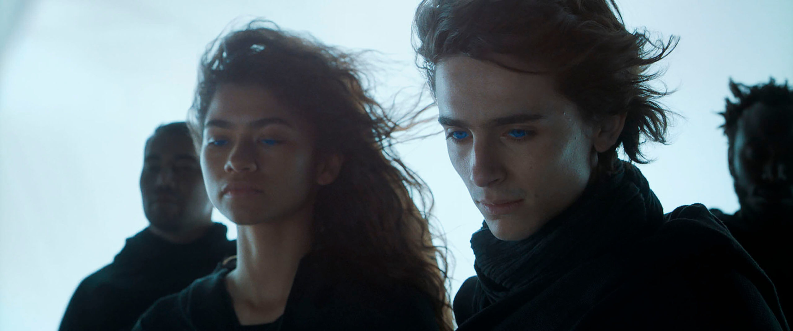
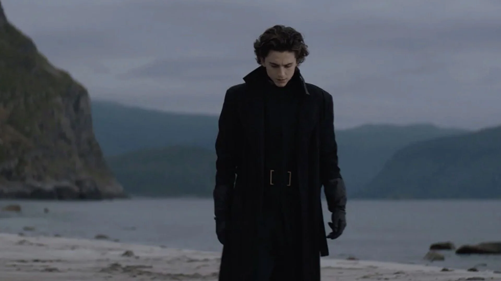
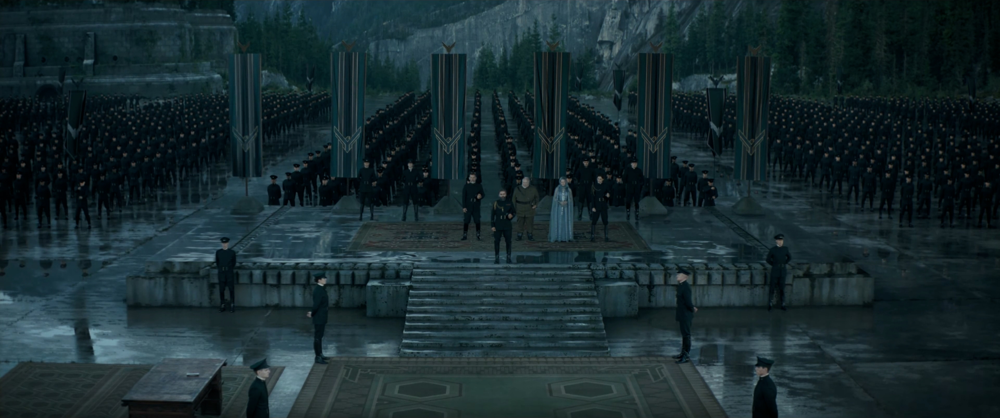
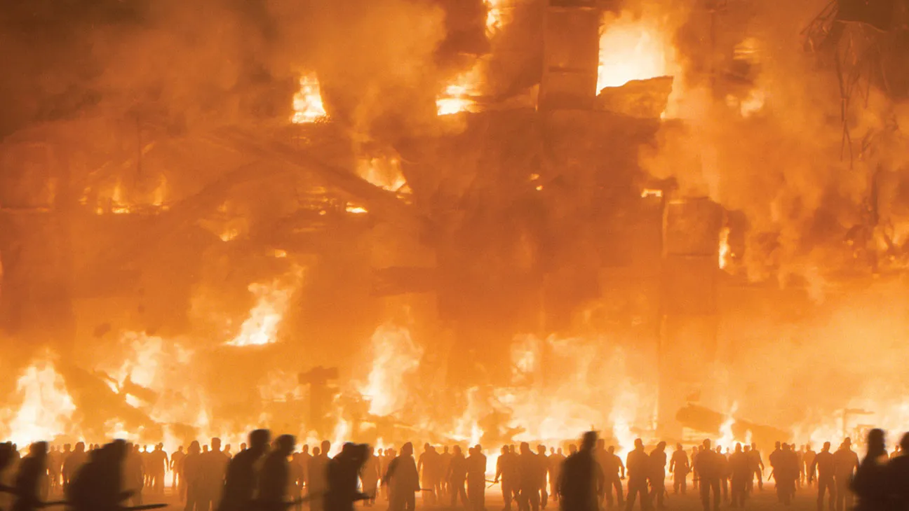
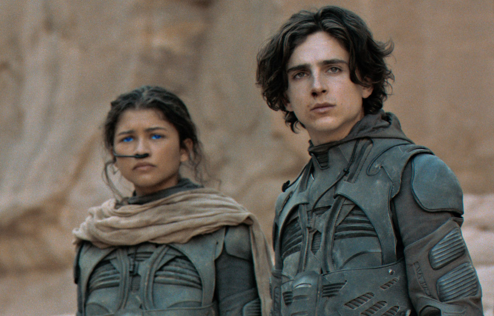
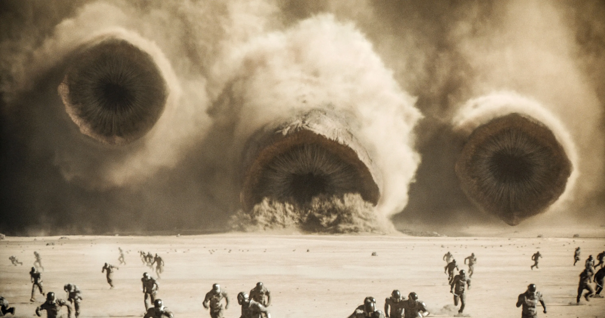

Paul Muad'Dib Atreides
Do herdeiro de Caladan ao senhor de Arrakis
Filho do duque Leto Atreides e de Lady Jessica, herdeiro da Casa Atreides e figura central em Arrakis. Sua trajetória percorre a herança nobre, o exílio no deserto e a ascensão ao trono imperial — transformando um jovem herdeiro em lenda trágica.

Paul Atreides"Eu não devo temer. O medo é o assassino da mente. O medo é a pequena morte que traz a obliteração total."— Litania contra o medo, Bene Gesserit
Capítulo I
Origem em Caladan
Antes do deserto, Paul é filho de uma casa nobre. Em Caladan, um mundo oceânico de céus cinzentos e costas verdes, ele é educado para herdar poder, disciplina e responsabilidade. Os primeiros sinais de algo extraordinário já se manifestam.
O filho do duque
Paul cresce em Caladan cercado por treino, estratégia e expectativa. Leto Atreides o prepara para governar com justiça; Jessica o educa entre política, percepção e controle, transmitindo técnicas da Bene Gesserit. Desde cedo, ele carrega presságios, visões recorrentes e a sensação de que há algo maior à sua espera.

Paul em Caladan
Casa AtreidesFormação e mestres
Duncan Idaho ensina combate; Gurney Halleck transmite tática e poesia; Thufir Hawat oferece lógica mentat. Cada mestre molda uma faceta do jovem Paul, tornando-o mais do que um aristocrata: um instrumento de múltiplas disciplinas convergentes.
O peso do nome Atreides
Ser Atreides não significa apenas possuir um sobrenome. Significa representar honra, legitimidade e ameaça política aos inimigos do trono. Em Paul, o nome da casa se mistura ao destino. Ele precisa aprender a ser filho, sucessor e símbolo ao mesmo tempo — enquanto seus sonhos o levam repetidamente a um deserto que nunca viu.
As visões começam
Sonhos com dunas infinitas, uma garota fremen e um futuro que ele ainda não compreende. As visões de Paul não são fantasia: são a manifestação de uma habilidade presciente que ultrapassará qualquer treinamento ou linhagem.
Capítulo II
A Mudança para Arrakis
A transferência para Arrakis muda tudo. O planeta não é apenas uma posse imperial: é o centro econômico do universo por causa da especiaria melange, e também um campo de armadilha política armada pelo próprio Imperador.
Arrakis: o planeta deserto
Arrakis — também chamado Duna — é um mundo de extremos: calor implacável, tempestades de areia e os gigantescos vermes da areia que atravessam suas profundezas. Sob sua superfície hostil, a especiaria melange faz dele o planeta mais valioso do Império. Quem controla a especiaria, controla o universo.
A especiaria melange
A substância mais valiosa do universo conhecido. Prolonga a vida, expande a consciência e possibilita a navegação interestelar. Encontrada exclusivamente em Arrakis, a melange é a razão pela qual grandes casas se destroem para controlar este planeta.
O contraste entre mundos
De Caladan — verde, úmido, seguro — para Arrakis — seco, mortal, desconhecido. Essa transição não é apenas geográfica: ela marca o fim da infância de Paul e o início de sua transformação. O planeta deserto exige adaptação ou morte.
A armadilha imperial
O Imperador Shaddam IV concede Arrakis aos Atreides sabendo que sua popularidade ameaça o trono. A mudança não é uma recompensa: é uma emboscada calculada, com os Harkonnen como instrumento secreto de destruição. Leto sabe do perigo, mas aceita o desafio.
"O mistério da vida não é um problema a ser resolvido, mas uma realidade a ser experimentada."— Reverenda Madre Gaius Helen Mohiam
Capítulo III
A Queda da Casa Atreides
A traição destrói tudo. A aliança entre os Harkonnen e o Imperador esmaga a Casa Atreides numa única noite. É a ruptura definitiva — o fim da vida que Paul conhecia.
A traição de Yueh
O doutor Wellington Yueh, condicionado pelo Imperium para ser incapaz de matar, tem seu condicionamento quebrado pelos Harkonnen. Sua traição abre as portas da fortaleza Atreides, permitindo o ataque devastador que elimina a guarda ducal.

A queda da Casa AtreidesA morte do duque Leto
Leto Atreides morre como viveu: com dignidade e estratégia. Mesmo capturado, tenta levar o Barão Harkonnen consigo usando uma cápsula de veneno escondida num dente. Sua morte marca o fim de uma era para Paul — não há mais proteção, não há mais casa, não há mais volta.
A fuga para o deserto
Paul e Jessica escapam para o deserto aberto — um lugar onde ninguém espera que sobrevivam. O que deveria ser sentença de morte se torna o caminho para a transformação. O deserto, hostil e implacável, paradoxalmente oferece a única possibilidade de sobrevivência e renascimento.
Capítulo IV
O Deserto e os Fremen
Arrakis deixa de ser território hostil e passa a ser escola. Entre os fremen, Paul aprende a sobreviver, a ler o deserto e a perceber que o planeta possui sua própria lógica de vida, poder e espiritualidade.
O povo do deserto
Os fremen são guerreiros endurecidos pelo ambiente mais hostil do universo. Sua cultura gira em torno da água — recurso sagrado e escasso. Cada gota é contada, cada vida é medida pelo que produz e preserva. Entre eles, Paul descobre uma civilização sofisticada onde outros veem apenas selvageria.

Paul no desertoStilgar e a confiança conquistada
Stilgar, líder do sietch Tabr, aceita Paul e Jessica não por profecia, mas por demonstração de valor. A relação entre Paul e Stilgar evolui de desconfiança para respeito mútuo — e eventualmente para uma lealdade que moldará o destino de Arrakis.
Chani e o vínculo com Arrakis
Chani é a conexão humana de Paul com o mundo fremen. Através dela, o deserto deixa de ser abstração e se torna lar. O vínculo entre os dois representa mais que romance: é a ponte entre o herdeiro imperial e o povo que ele liderará. Chani vê o homem; os fremen veem o profeta.
Cavalgar o verme
O rito de passagem definitivo: montar um verme da areia. Quando Paul domina um Shai-Hulud, ele não apenas prova sua coragem — ele demonstra que pertence a Arrakis. O planeta o aceita, e com isso, os fremen também.
"A visão do tempo nunca é uma linha reta. É um rio que flui em todas as direções ao mesmo tempo."— Paul Muad'Dib Atreides
Capítulo V
O Surgimento de Muad'Dib
No exílio, Paul não apenas resiste: ele se transforma. O nome Muad'Dib — o rato do deserto que sobrevive onde nada deveria — marca sua entrada no imaginário fremen. O homem e o mito começam a se confundir.
Lisan al-Gaib: o messias esperado
As profecias plantadas pela Missionaria Protectiva das Bene Gesserit encontram em Paul sua encarnação. Os fremen o reconhecem como Lisan al-Gaib — a Voz do Mundo Exterior. Mas Paul sabe que essas profecias foram engendradas, e o dilema entre usá-las e rejeitá-las define seu conflito interno.
A Água da Vida
Ao consumir a Água da Vida — o veneno transmutado dos vermes — Paul desperta completamente sua presciência. Ele vê todos os futuros possíveis, incluindo a jihad em seu nome. O poder é absoluto, mas o preço é conhecer cada consequência terrível de suas escolhas.
O líder relutante
Paul assume a liderança não por ambição, mas por inevitabilidade. Cada caminho que sua presciência revela leva à violência, à devoção cega e à guerra santa. Ele tenta encontrar uma via que minimize o sofrimento, mas descobre que o mito já é maior que o homem.
O homem versus o símbolo
Muad'Dib não é Paul. É a projeção das esperanças, medos e fé de um povo inteiro. Quando os fremen olham para Paul, já não veem o jovem de Caladan — veem um salvador. Essa transformação é irreversível: o símbolo devora a pessoa, e Paul compreende que sua identidade anterior está desaparecendo.
Capítulo VI
A Guerra pelo Poder
Paul converte conhecimento do deserto, fé fremen e estratégia militar em força imparável. O confronto final não é apenas contra os Harkonnen — é contra o próprio Imperador.
Discurso de Paul Atreides
Momento decisivo em que Paul Atreides assume seu papel como líder dos fremen e desafia as forças imperiais.

O ataque ao ImperadorA batalha de Arrakeen
Paul desfere seu golpe final montando os vermes da areia contra as forças combinadas dos Harkonnen e do Imperador. A tempestade de areia se torna arma; os fremen se tornam exército. A conquista de Arrakeen marca o fim da ordem imperial como se conhecia.
O duelo com Feyd-Rautha
O combate ritual entre Paul e Feyd-Rautha Harkonnen não é apenas pessoal: é o embate simbólico entre duas casas, duas filosofias, dois futuros. A vitória de Paul sela o destino do Imperium.
A conquista do trono
Paul não apenas derrota o Imperador: ele o substitui. Ao reivindicar a mão da princesa Irulan e o trono imperial, Paul transforma uma revolta local em revolução galáctica. O jovem de Caladan agora governa o universo conhecido.
Capítulo VII
Poder, Visão e Peso do Destino
O trono imperial é conquistado, mas o peso da presciência e da jihad em seu nome transforma a vitória em prisão. O tom deixa de ser heroico e assume caráter trágico.
A jihad inevitável
Mesmo que Paul não a deseje, a guerra santa se espalha pelo universo em seu nome. Bilhões morrem sob a bandeira de Muad'Dib. A devoção dos fremen, que o salvou, agora se transforma em fanatismo incontrolável — e Paul compreende que certas forças, uma vez desencadeadas, não podem ser detidas.
O peso da presciência
Ver o futuro não é liberdade: é condenação. Paul enxerga cada caminho possível e sabe que todos levam ao sofrimento. A presciência que o torna poderoso é a mesma que o aprisiona numa teia de consequências das quais não há escapatória.
Escolha individual versus determinismo
Paul Atreides encarna o dilema central de Duna: é possível ser livre quando se pode ver o destino? A tensão entre agência humana e forças históricas maiores percorre toda a narrativa. Paul é ao mesmo tempo o agente de mudança e a vítima do processo que desencadeou — um herói trágico no sentido mais completo.
Capítulo VIII
Legado de Paul Atreides
O legado de Paul é ambíguo. Ele transforma Arrakis, abala o império, inspira devoção e medo. Seu nome atravessa política, religião e memória coletiva.
A transformação de Arrakis
Sob o governo de Paul, Arrakis começa a mudar. Os sonhos fremen de um planeta verde — o terraforming ecológico proposto por Liet- Kynes — ganham impulso. Mas a transformação do planeta ameaça a produção de especiaria, criando um paradoxo entre liberdade fremen e economia galáctica.
O homem e a lenda
Paul Atreides, o jovem de Caladan, deixou de existir. Em seu lugar permanece Muad'Dib, o mito. A dualidade entre o indivíduo e o ícone define seu legado: ele conquistou o universo, mas perdeu a si mesmo no processo.
Uma lenda trágica
Duna não conta apenas a ascensão de um líder: conta o nascimento de uma lenda trágica. Paul Atreides mostra que o poder absoluto não liberta — aprisiona. Que a profecia não salva — condena. Que o herói e o tirano podem habitar o mesmo corpo. Seu legado é um aviso: cuidado com os messias.
Linha do Tempo
A Jornada de Paul Atreides
Eventos-chave da trajetória de Paul, do nascimento em Caladan à conquista do trono imperial.
Nascimento em Caladan
Paul nasce como herdeiro da Casa Atreides, filho do duque Leto e de Lady Jessica.
O teste do Gom Jabbar
A Reverenda Madre testa Paul com a caixa da dor. Ele resiste além de qualquer expectativa.
Chegada a Arrakis
A Casa Atreides assume o controle de Arrakis e da produção de especiaria.
A Queda dos Atreides
Ataque Harkonnen. Morte de Leto. Paul e Jessica fogem para o deserto.
Encontro com os Fremen
Paul e Jessica são acolhidos pelo sietch Tabr sob liderança de Stilgar.
Ascensão de Muad'Dib
Paul assume liderança dos fremen, consome a Água da Vida e desperta totalmente sua presciência.
Batalha de Arrakeen
Ataque final contra as forças imperiais e Harkonnen. Paul derrota Feyd-Rautha em combate ritual.
Conquista Imperial
Paul assume o trono do Imperador Padishah, dando início a uma nova era.
Trilha Sonora
A Música de Duna
A trilha sonora composta por Hans Zimmer é inseparável da experiência de Duna. Selecione uma faixa para ouvir — o disco sairá da capa do álbum e começará a girar.

Dune (2021)
- 01Dream of Arrakis2:55
- 02Herald of the Change5:53
- 03Bene Gesserit1:57
- 04Gom Jabbar3:49
- 05The One3:30
- 06Leaving Caladan3:11
- 07Arrakeen2:56
- 08Ripples in the Sand3:44
- 09Paul's Dream6:06
- 10Sandwalker5:42
- 11My Road Leads into the Desert5:45

Dune: Part Two (2024)
- 01Beginnings Are Such Delicate Times2:44
- 02Harkonnen Arena5:23
- 03A Time of Quiet Between the Storms6:10
- 04Eclipse2:21
- 05Worm Riders5:53
- 06Southern Messiah4:09
- 07The Sietch3:07
- 08Kiss the Ring6:52
- 09Lisan al Gaib8:22
- 10Only I Will Remain7:21
⚠️ Os players do Spotify e as capas dos álbuns exigem que
o site seja servido via HTTP. Se você está vendo
"Page not found" nos players, é porque o arquivo está sendo aberto
diretamente pelo navegador (file:///).
Como resolver: No VS Code, instale a extensão
Live Server (de Ritwick Dey), clique com o botão
direito no index.html e selecione
"Open with Live Server". Isso criará um servidor
local (http://127.0.0.1:5500) e os embeds do Spotify
funcionarão normalmente.
A animação do vinil (disco saindo da capa e girando) é uma demonstração de manipulação do DOM com JavaScript e funciona independentemente do Spotify.